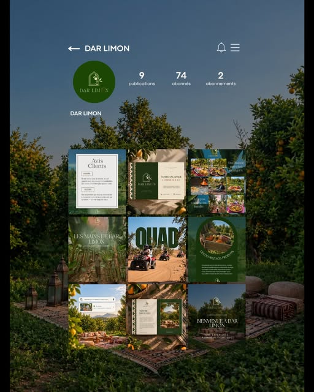
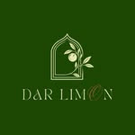
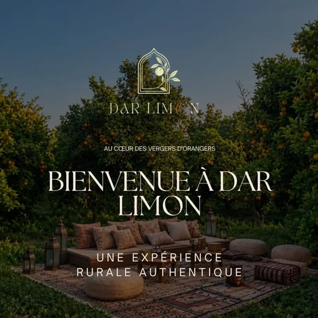
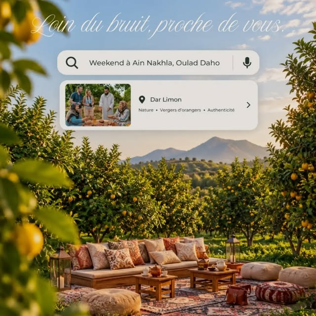
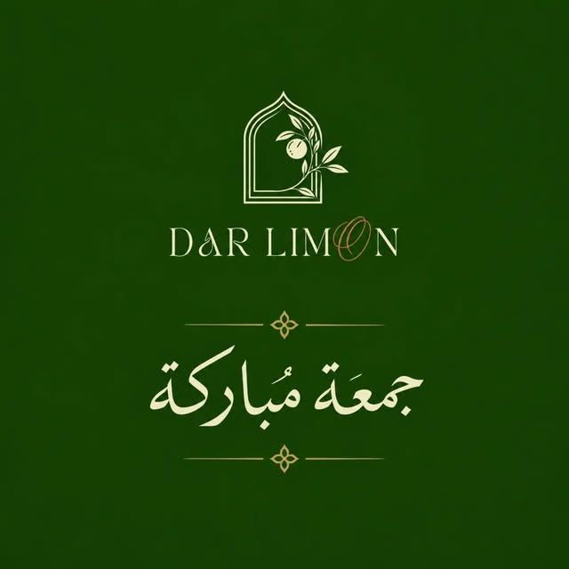
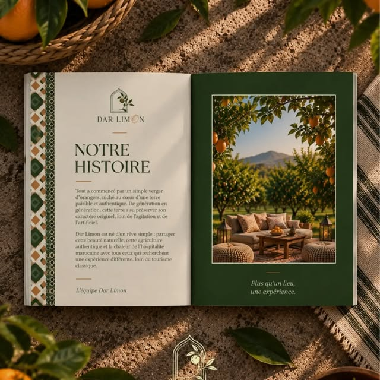

DESIGN / BRANDING / SOCIAL MEDIA
Dar Limon
Une identité au rythme de la nature.


Le projet
Création du logo, de publications Instagram et d’une carte de visite pour Dar Limon. L’univers visuel accompagne une expérience en pleine nature, autour du calme et des vergers.
Mon intervention
- Création du logo
- Design des publications Instagram
- Design de la carte de visite
Publications Instagram
Une sélection des créations publiées. Cliquez sur une image pour la voir en grand.



